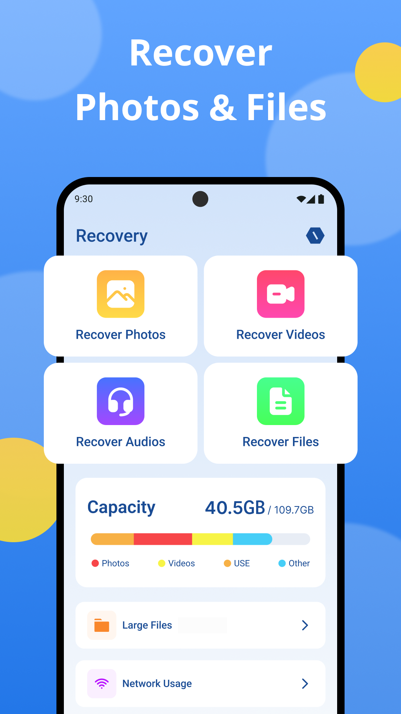
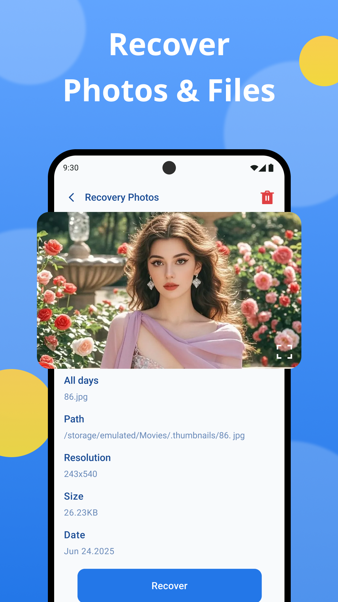
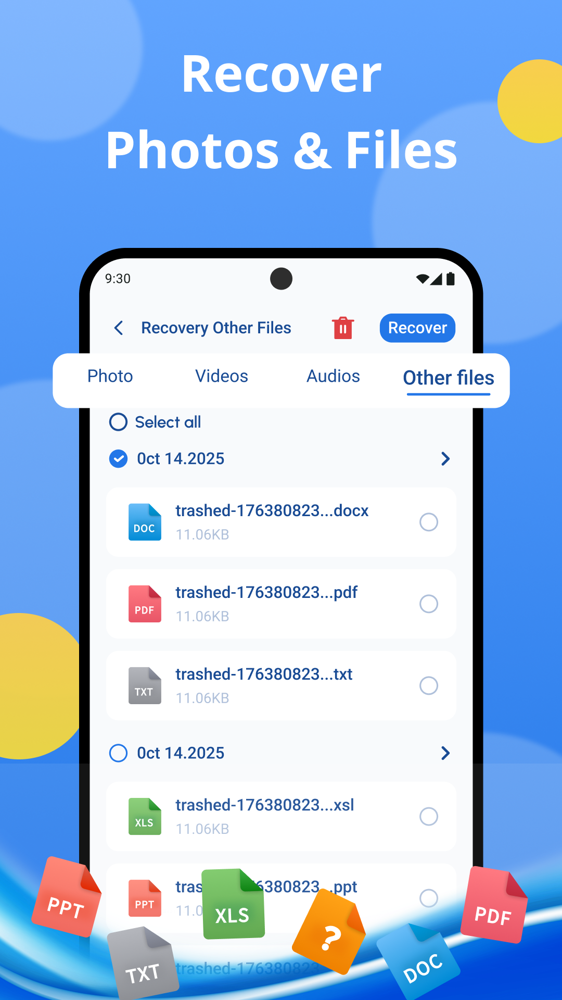
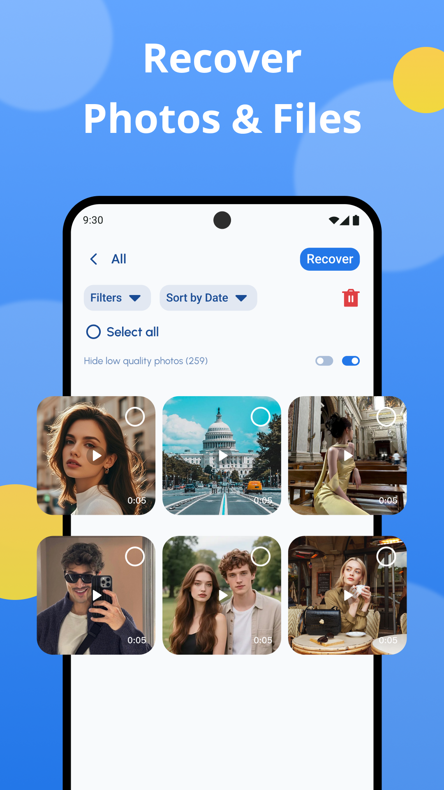
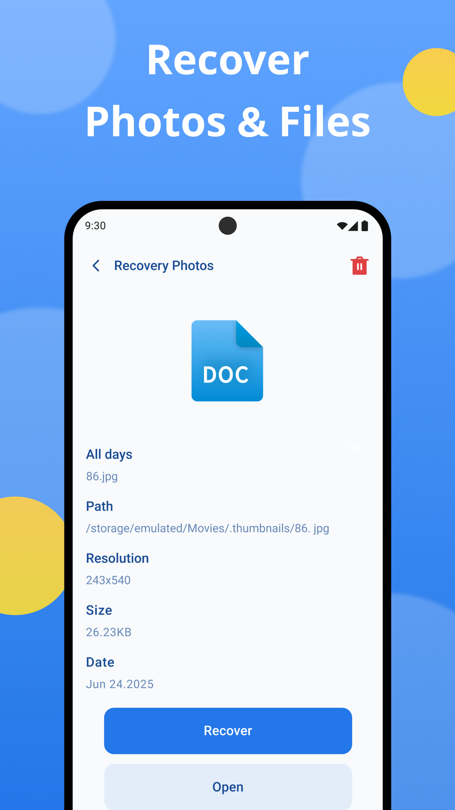

Media Recovery
Browse, preview, and restore recently deleted media.
Recovery: Scan & Save helps you find recently deleted photos, videos, audio, and files from accessible storage areas, then save recovered items into one organized folder.
- Local Scan
- Preview First
- Recovery Folder


Organized Scan
Photos, videos, audio, and files grouped for quick review.
On Device
Your media stays on your phone while you choose what to restore.
Organized media retrieval
Scan accessible media locations and sort recently deleted photos, videos, audio, and files into clear categories.
Preview before selection
Inspect image previews, video thumbnails, file details, dates, sizes, and paths before deciding what to recover.
Dedicated recovery folder
Restore selected items into one specific location so recovered content is easy to find without cluttering your gallery.
Simple recovery flow
Move from scan to review to restore in a few focused steps, with clear controls and no complicated file workflow.
Product Gallery
Five views into the Recovery: Scan & Save experience.
The screenshots show the app's main recovery dashboard, detail preview, filterable media grid, document preview, and grouped file recovery tools.
Dashboard
Recover Photos & Files
Start from a clear home view with dedicated entries for photo, video, audio, and file recovery.
Preview
Inspect Before Restore
Open file details to check preview, path, resolution, size, and date before recovering.

Selection
Filter Scan Results
Browse a clean media grid, hide low-quality items, and choose exactly what to restore.

Documents
Recover Useful Files
Review document records and recover common file types from accessible deleted-file locations.
File Groups
Photos, Videos, Audios, Other Files
Switch between file categories and recover selected items into an organized destination folder.
Privacy & Safety
Designed around local recovery and clear expectations.
Local media handling
The recovery workflow runs on your phone and does not upload your personal media to external servers.
Transparent limitations
Recovery depends on deletion timing, storage activity, and accessible system folders; not every file can be restored.
User-controlled permissions
Storage access is used to scan and restore local files, with selection decisions kept in your hands.